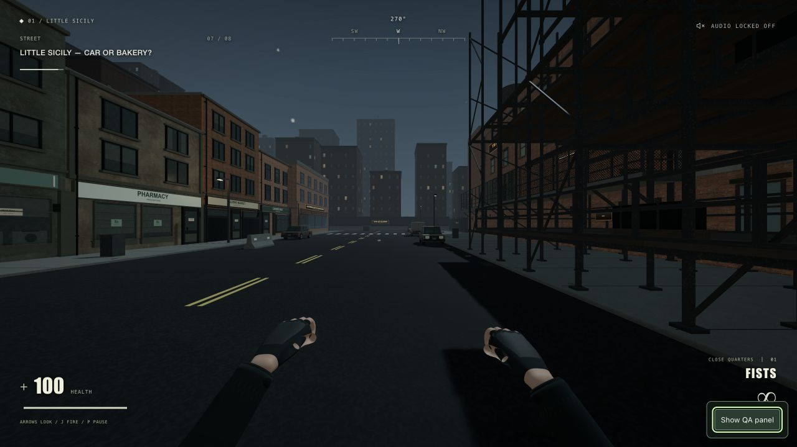
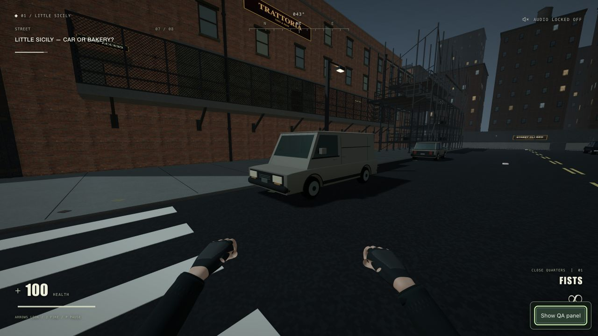
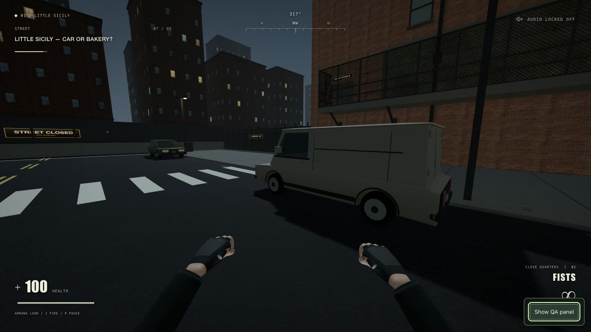
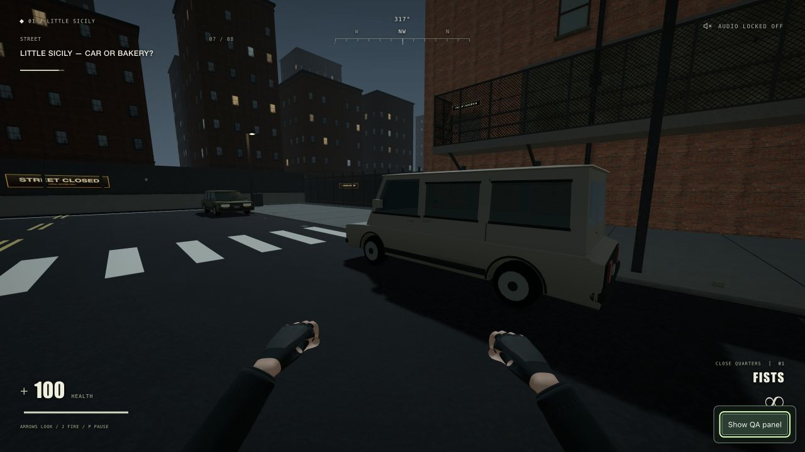

One Last Kill · civilian van art pass
Seven matched views compare the current civilian-car baseline with the installed panel van. Only the middle sedan changes; all four parking centres and headings stay fixed. The objective sedan remains unchanged.
Run setup: 1280 × 720 CSS pixels, FOV 82°, reduced camera motion off. High uses an explicit 2× drawing buffer; Automatic records its normal 1.20× device/preset scale here. The visible reports match camera and recorded lighting settings. Comparison limits · Panel and passenger designs

BEFOREAFTER{kind=link}
{kind=link}
What these comparisons establish, and their limits
- These are paused surface comparisons. All seven pairs show a different lower-left HUD hint, and row/objective views include changed pickup orientation. HUD values, overlays, particles and transient effects are not synchronized; they are not evidence of an asset regression.
- Feet and yaw/pitch are rounded by the visible QA report. Row and middle-bay reports also include the explicit camera anchor and look target. Street and objective reports do not include those two vectors.
- Separate control/final settings records confirm run setup at FOV 82° with reduced camera motion off. Each individual capture report omits both fields; their continuity across the capture sequence depends on the retained review setup. Exposure and the current selected practical lights are not exported.
- The final DOM viewport record directly confirms 1280×720 CSS pixels and a 2560×1440 canvas. Each individual report omits CSS dimensions; drawing buffer divided by ratio consistently implies 1280×720, matching the original capture dimensions.
- The recorded bake, directional-shadow projection, reflection configuration and roof-light settings match within each pair. Initialization timings and cumulative update counters differ and are excluded from the lighting comparison.
- Original browser capture bytes are preserved. The files retain their .png names but their encoded format is JPEG, so compression limits pixel-level or fine texture judgments.
- Automatic images are paused snapshots at the recorded 1.20× device/preset scale. They do not establish resolution adaptation or motion quality during ordinary gameplay.
- Screenshot sessions do not supply performance conclusions. The separate timing CSV reports callback cadence and CPU/GPU measurements; callback rate is not presented FPS.
Panel and passenger design options
Design comparison · not before/after. These are final front and rear views at the same camera and parking transform. The panel van is installed in the district; the passenger van is available through the factory and paused QA preview. It is not a second parked van in the playable street.
{kind=link}

Panel van · installed
Front quarter · High, explicit 2×
Opaque cargo body; the middle parking space used in gameplay.
{kind=link}
Passenger van · design option
Front quarter · High, explicit 2×
Glazed passenger body; paused render-only preview, with authored collision retained.
{kind=link}

Panel van · installed
Rear quarter · High, explicit 2×
Opaque cargo body; the middle parking space used in gameplay.
{kind=link}

Passenger van · design option
Rear quarter · High, explicit 2×
Glazed passenger body; paused render-only preview, with authored collision retained.